Final Fantasy VII
Final Fantasy VII est un jeu vidéo de rôle (RPG) développé et édité par Square Enix, initialement sorti en 1997 pour la console PlayStation de Sony.
Il est largement considéré comme l'un des plus grands jeux de tous les temps et a eu un impact majeur sur l'industrie du jeu vidéo, influençant non seulement les RPG, mais également la culture populaire dans son ensemble.
Il fut tellement un succés que d'autres opus autour ce celui-là ont vu le jour faisait du jeu une licence parmis la licence Final Fantasy.
Le personnage principal s'appelle Cloud Strife et on suit ses aventures a travers le jeu.
Présentation du personnage principal
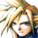 Cloud Strife
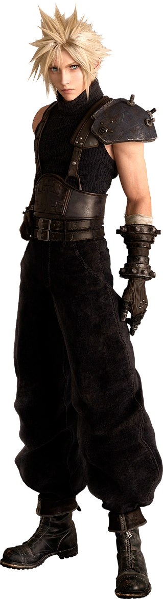 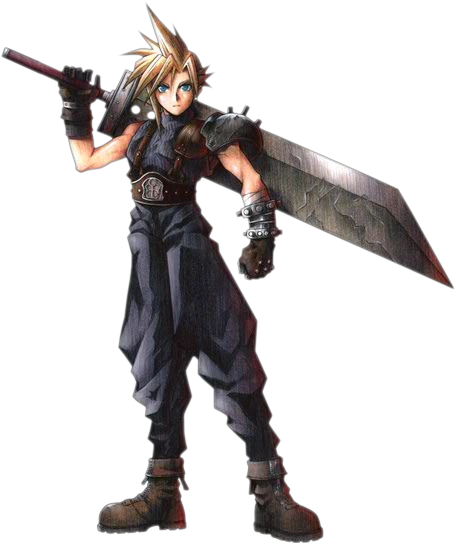
Cloud Strife est l'un des protagonistes les plus emblématiques de l'univers des jeux vidéo.
Créé par Square Enix, Cloud est un personnage complexe dont le parcours épique et les traits distinctifs ont captivé des millions de fans depuis sa première apparition en 1997.
Né dans le village de Nibelheim, Cloud a grandi avec des rêves de devenir un SOLDAT, une force d'élite employée par la méga-corporation Shinra Electric Power Company dans le monde dystopique de Final Fantasy VII.
Après des années d'entraînement, il rejoint effectivement les rangs du SOLDAT, mais son rêve est éclipsé par une série d'événements traumatisants.
Cloud devient ensuite un mercenaire et se joint à un groupe de rebelles appelé Avalanche, luttant contre Shinra et sa quête sans fin de domination du monde.
Son chemin croise celui de nombreux autres personnages mémorables, notamment Tifa Lockhart, Aerith Gainsborough et Barret Wallace, qui deviennent ses alliés proches.
Après avoir rejoint le groupe rebelle Avalanche et participé à diverses missions contre Shinra, Cloud découvre des révélations surprenantes concernant son propre passé.
Il réalise que ses souvenirs sont altérés, une réalisation qui le plonge dans une crise identitaire profonde. Il apprend que ses souvenirs de gloire en tant que membre du SOLDAT et son lien avec Sephiroth sont en partie falsifiés, manipulés par Shinra.
Au fil de l'aventure, Cloud lutte pour démêler la vérité de la fiction, confrontant ses propres démons intérieurs et sa culpabilité. Il se tourne vers ses amis et alliés, notamment Tifa, qui partage un passé commun avec lui, pour trouver des réponses et découvrir qui il est vraiment.
Pendant ce temps, la menace de Sephiroth devient de plus en plus urgente. Le plan machiavélique de Sephiroth pour invoquer une entité appelée Meteor afin de détruire la planète se révèle, et Cloud et son groupe se lancent dans une course contre la montre pour l'arrêter.
Présentation des personnages secondaires
Tifa Lockhart
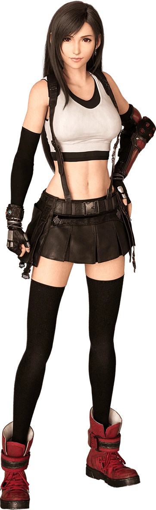 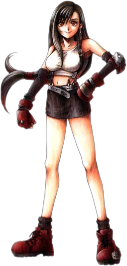
Tifa Lockhart est l'un des personnages principaux de Final Fantasy VII.
Elle est un pilier central de l'histoire, apportant à la fois force, compassion et détermination au groupe rebelle Avalanche dans sa lutte contre la tyrannie de la méga-corporation Shinra.
Née et élevée dans le village de Nibelheim, Tifa est une amie d'enfance de Cloud.
Les deux partagent un lien profond depuis leur enfance, bien que leurs chemins se soient séparés pendant un certain temps. Tifa a fondé le bar "7th Heaven" à Midgar, qui sert de quartier général pour le groupe rebelle Avalanche.
Après avoir retrouvé Cloud et rejoint les rangs d'Avalanche, Tifa devient une figure importante dans la lutte contre Shinra. Elle apporte non seulement son expertise au combat, mais aussi un sens aigu de la justice et un dévouement inébranlable à ses amis et à sa cause.
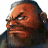 Barret Wallace
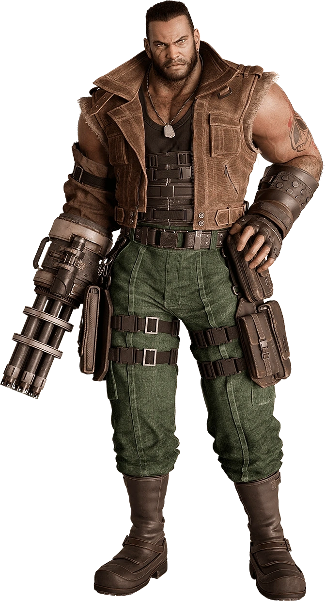 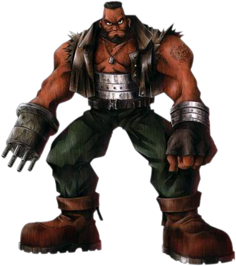
Barret Wallace est un personnage majeur de Final Fantasy VII
Il est un leader charismatique et déterminé qui dirige le groupe rebelle Avalanche dans sa lutte contre la méga-corporation Shinra, incarnant la résistance et la détermination face à l'oppression.
Natif de la ville de Corel, Barret a été témoin des ravages causés par Shinra sur sa communauté, notamment la destruction de sa ville natale et la mort de nombreux habitants lors d'un incident tragique.
Déterminé à se battre contre l'oppression de Shinra, il fonde le groupe rebelle Avalanche pour lutter contre l'exploitation des ressources de la planète.
Barret est également le père adoptif de Marlene, une jeune fille qu'il a recueillie après la mort de sa mère. Sa relation avec Marlene est une source de motivation et de responsabilité, l'incitant à poursuivre sa lutte pour un avenir meilleur.
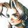 Aeris Gainsborough
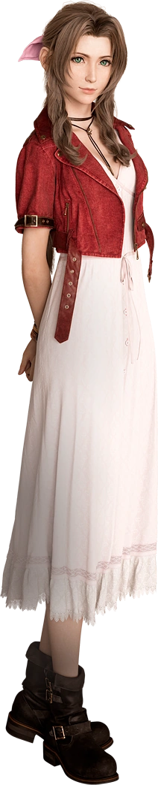 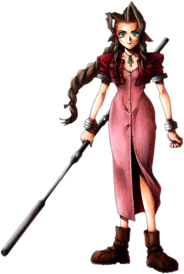
Aerith Gainsborough, souvent orthographiée "Aeris" dans les premières versions du jeu, est l'un des personnages les plus emblématiques de Final Fantasy VII.
Elle incarne la grâce, la gentillesse et la spiritualité, apportant une touche de lumière et d'espoir dans un monde dominé par l'obscurité et la corruption.
Aerith est une ancienne habitante de la Cité des Anciens, un lieu mystique et sacré dont l'accès est limité aux seuls descendants de la lignée des Anciens.
Elle est la dernière survivante de ce peuple ancien et possède des pouvoirs spirituels uniques, notamment la capacité de communiquer avec la planète Gaïa elle-même.
À la suite de sa rencontre avec Cloud, Aerith se joint à lui et au groupe rebelle Avalanche dans leur lutte contre Shinra.
Tout en aidant le groupe dans leur mission pour sauver la planète, Aerith joue également un rôle crucial dans la quête pour contrecarrer les plans diaboliques de Sephiroth.
Présentation de l'antagoniste
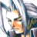 Sephiroth
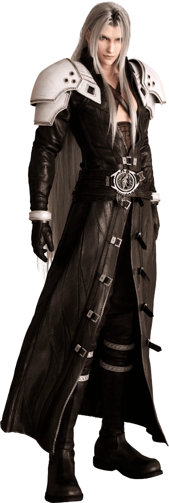 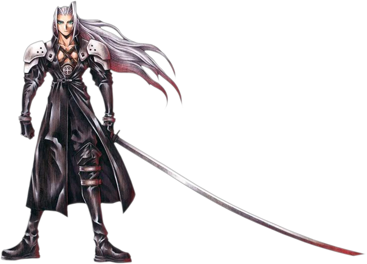
Sephiroth est l'antagoniste principal de Final Fantasy VII, un personnage emblématique et empreint de mystère qui incarne le pouvoir, la folie et la destruction.
Son charisme inquiétant et sa présence imposante en font l'un des méchants les plus mémorables de l'histoire du jeu vidéo.
Autrefois un membre respecté du SOLDAT, l'unité d'élite de Shinra, Sephiroth était vénéré comme un héros pour ses exploits au combat et ses compétences exceptionnelles.
Cependant, sa descente dans la folie commence lorsqu'il découvre la vérité sur ses origines et sur le projet secret de Shinra visant à créer des soldats génétiquement modifiés appelés les "Sephiroths".
Réalisant que son existence même est le fruit de manipulations génétiques et de mensonges, Sephiroth sombre dans la folie et développe un désir insatiable de vengeance contre l'humanité.
Convaincu que lui seul est digne de régner sur la planète, il entreprend une quête impitoyable pour invoquer une entité mystique appelée "Meteor" afin de détruire le monde et de devenir un dieu.
Gameplay
Le gameplay de Final Fantasy VII est un mélange d'éléments de jeu de rôle traditionnels et de mécaniques de combat stratégiques, offrant une expérience immersive et profonde aux joueurs.
Voici un aperçu des principaux aspects du gameplay :
-
Exploration :
- Les joueurs parcourent un vaste monde ouvert composé de villes, de donjons, de champs et d'autres lieux variés.
- Ils interagissent avec des personnages non-joueurs (PNJ) pour obtenir des quêtes, des informations et des objets.
- L'exploration est souvent associée à la recherche de trésors cachés, de secrets et de passages secrets.
-
Combat :
- Les combats se déroulent sous forme de rencontres aléatoires ou de rencontres préprogrammées avec des ennemis visibles.
- Le système de combat est au tour par tour, où chaque personnage et ennemi a un tour pour agir.
- Les joueurs sélectionnent des actions à partir d'un menu, telles que attaquer, utiliser de la magie, utiliser des objets ou invoquer des compétences spéciales.
- Les personnages gagnent de l'expérience et des points d'aptitude (AP) après chaque combat, leur permettant de monter de niveau et de débloquer de nouvelles compétences.
-
Personnalisation des personnages :
- Les joueurs peuvent équiper leurs personnages avec diverses armes, armures, accessoires et objets consommables pour améliorer leurs statistiques et leurs capacités.
- Chaque personnage a des compétences uniques et peut apprendre de nouvelles compétences en équipant des armes ou en utilisant des matériaux spéciaux appelés "Matérias".
- Les Matérias sont des orbes magiques qui confèrent aux personnages des sorts, des compétences et des capacités spéciales, telles que des sorts de feu, de guérison, ou même des invocations de créatures puissantes.
-
Quêtes et Mini-jeux :
- En plus de l'histoire principale, les joueurs peuvent participer à des quêtes secondaires, des mini-jeux et des activités annexes, offrant des récompenses supplémentaires et approfondissant l'exploration du monde du jeu.
- Les mini-jeux comprennent des courses de Chocobos, des combats d'arène, des jeux de cartes et bien plus encore.
-
Progression de l'histoire :
- L'histoire principale est divisée en chapitres, chaque chapitre proposant une série d'objectifs à atteindre pour faire progresser l'intrigue.
- Les joueurs rencontrent divers personnages clés, résolvent des énigmes, traversent des donjons et participent à des scènes cinématiques épiques qui font avancer l'histoire.
Les Matérias
Les Matérias sont des sortes de sphères résultant de la cristallisation de la Mako, l'énergie spirituelle de la Planète.
Elles contiennent ainsi la connaissance et la sagesse des Cetras, et permettent une fois équipées d'intéragir avec la Planète pour créer des effets divers et variés.
Il existe au total cinq types de Matérias dont les personnages pourront se servir au cours du jeu, les Matérias Blanche et Noire étant seulement des éléments du scénario :

| Combinaison | Description | ||
|---|---|---|---|
| Tout | + | Matéria magique | Pour lancer un sort sur tous les personnages ou sur tous les adversaires à la fois |
| Tout | + | Restaurer | Pour pouvoir soigner tous les personnages à la fois |
| Tout | + | Barrière | Pour protéger tous les personnages, si vous ne possédez pas Grand garde |
| El. Base | + | Foudre | Pour vaincre les ennemis et boss mécaniques avec de simples attaques physiques |
| El. Base | + | Choco.Mog | Pour vaincre Grand œdème et les ennemis volants avec de simples attaques physiques |
| El. Base | + | Feu | Pour se protéger des attaques de Boule motorisée et pour apprendre Bêta rapidement |
| El. Base | + | Poison | Pour se protéger de l'élément Poison et des monstres infligeant [Poison] grâce à un bug |
| El. Base | + | Léviathan | Très utile pour se protéger des attaques de Jénova·VIE et apprendre Scaphandre |
| Effet supplémentaire | + | Transformation | Pour infliger les statuts [Grenouille] et [Mini] à l'arme, ou s'en protéger |
| Effet supplémentaire | + | Temps | Pour infliger les statuts [Lent] et [Stop] à l'arme, ou s'en protéger |
| Effet supplémentaire | + | Contenir | Pour pétrifier l'ennemi en l'attaquant (ou se protéger face aux statuts générés par la Matéria) |
| Effet supplémentaire | + | Odin | Pour tuer instantanément l'ennemi en l'attaquant, s'il n'est pas immunisé à [Mort] |
| Effet supplémentaire | + | Hadès | Pour infliger (ou se protéger de) plusieurs états anormaux en attaquant normalement l'ennemi |
| Absorption HP | + | Commande maître | Pour regagner des HP en effectuant n'importe quelle commande : Attaque, 2x, 4x… |
| Absorption HP | + | Chev. Table Ronde | Pour regagner l'intégralité de vos HP (ou presque) après avoir lancé l'invocation |
| Absorption HP | + | Commande maître | Pour regagner des MP en effectuant n'importe quelle commande : Attaque, 2x, 4x… |
| Absorption HP | + | Chev. Table Ronde | Pour regagner l'intégralité de vos MP (ou presque) après avoir lancé l'invocation |
| Vol simultané | + | Sentir | Pour pouvoir voler les ennemis à longue portée, la commande Sentir étant à longue portée |
| Vol simultané | + | Magie maîtresse | Pour pouvoir voler le/les ennemis après lui/leur avoir lancé n'importe quel sort |
| Vol simultané | + | Commande maître | Pour pouvoir voler le/les ennemis après lui/leur avoir lancé n'importe quelle commande |
| Vol simultané | + | Invocation maître | Pour pouvoir voler les ennemis après leur avoir lancé n'importe quelle invocation |
| Coupure suppl. | + | Coup mortel | Pour lancer une attaque après avoir réussi ou échoué un coup critique sur l'ennemi |
| Coupure suppl. | + | Commande maître | Pour lancer une attaque physique après n'importe quelle commande : Attaque, Elément… |
| Quadruple magie | + | Comète | Pour lancer quatre fois d'affilée la magie Comète2 sur les adversaires (seize attaques) |
| Quadruple magie | + | Magie maîtresse | Pour lancer quatre fois la magie voulue sur un ou plusieurs adversaires |
| Quadruple magie | + | Invocation maître | Pour lancer quatre fois l'invocation voulue sur tous les adversaires |
| Turbo MP+ | + | Chev. Table Ronde | Pour bénéficier d'une augmentation de puissance importante pour seulement 5 MP en plus |
| Opposition Magie | + | Restaurer | Pour se soigner automatiquement après avoir été attaqué par l'ennemi |
| Opposition Magie | + | Guérison Max | Pour se soigner complètement après avoir été attaqué par l'ennemi |
| Opposition | + | Voler | Pour essayer de voler l'ennemi dès qu'il vous attaquera |
| Opposition | + | Mimer | Pour contre-attaquer avec la dernière attaque lancée par le groupe (très puissant en combo) |
| Attaque Furtive | + | Quitter | Pour pouvoir attraper le chocobo dès le début d'un combat-chocobo, grâce à Retrait |
| Attaque Furtive | + | Bouclier | Pour commencer le combat en étant temporairement protégé de la plupart des attaques |
| Attaque Furtive | + | Lancer | Pour tuer tous les ennemis dès le début du combat, s'ils ont moins de 10000 HP |
| Attaque Furtive | + | Chev. Table Ronde | Pour terminer le combat aussitôt celui-ci commencé |
| Attaque Finale | + | Ranimer | Pour ranimer et guérir le personnage mort lorsque celui-ci meurt |
| Attaque Finale | + | Phénix | Pour ranimer et guérir tous les alliés morts lorsque celui qui est équipé de la combinaison meurt |
Retour en haut de page
Page principale
Wiki Fandom du jeu
Site sources pour les combinaisons de Materia